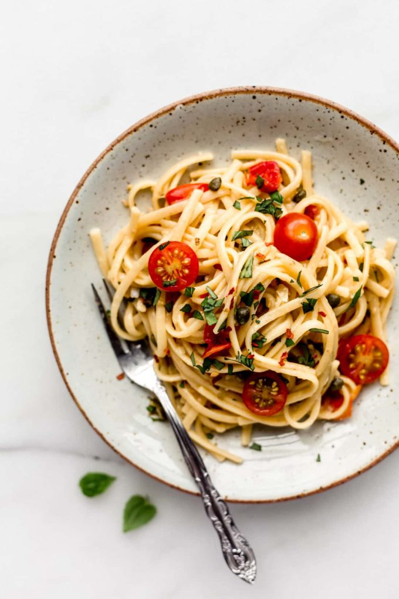

Pasta

Description
Simple, delicious and easy to make.
A flavorful pasta for any occasion!
Ingredients
- Pasta
- Cherry Tomatoes
- Fresh Basil
- Olive Oil
- Parmesan
- Salt
Steps
- Boil pasta until al dente and set to the side
- Add olive oil to pan and heat over medium heat
- Add cherry tomatoes to pan and cook until tender
- Add pasta to pan and season with salt. Cook for 2 minutes
- Add basil and parmesan and stir until well coated
- Take pan off heat and let sit for 5 minutes
- Plate and season to taste as required